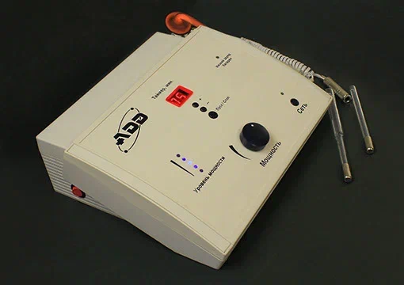
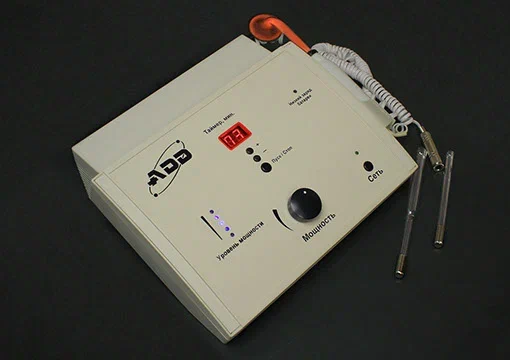
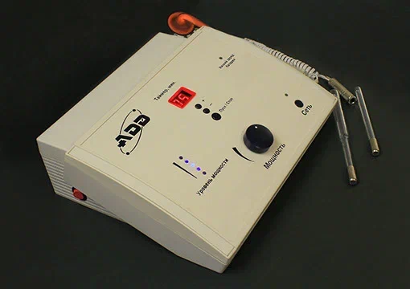
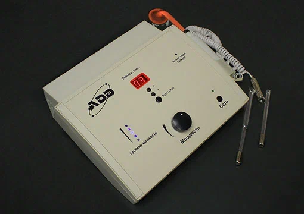

АДД – аппарат детоксикации дезинфекции человека
В соодружестве с ООО "ПолиМедЭко" мы предлагаем инновационную разработку Орманна С.В. - АДД (аппарат детоксикации дезинфекции человека)
ООО "СМЕ ИННОВАЦИИ" является официальным партнером компании ООО "ПолиМедЭко" на территории РФ, стран СНГ, Индии, Юго-Восточной Азии, Северной Америки и Европейского соодружества.

 



ОСНОВНЫЕ ПРЕИМУЩЕСТВА АППАРАТА АДД
- Образует кислород внутри организма автономно от любых источников кислорода.
- Не допускает дыхательной недостаточности. Автономно повышает сатурацию и удерживает её без посторонних источников кислорода.
- Высокая эффективность в лечении Covid-19 и его осложнений.
- Неинвазивный метод лечения (неразрушающий, атравматичный, бескровный).
- Аппарат детоксикации дезинфекции человека (АДД) - класс безопасности 2А. Работает 24 ч. в сутки.
- Аппарат является источником, производящим нестандартный антибиотик с неограниченным ресурсом, длительностью применения и срока годности.
- Экологически совместим с организмом человека и другими биологическими объектами.
- Самый мощный дезинфектант, как наружного, так и внутреннего применения без повреждения клеток, органов и тканей человека.
- АДД обеспечит профилактику любых инфекций и ускорит репаративный процесс в 2-3 раза.
- Подавляет анаэробную бактериальную и вирусную инфекции. В том числе COVID-19. Уже применялся больными в условиях эпидемии.
- Не имеет противопоказаний, осложнений, побочных явлений, аллергии. Передозировки не бывает.
- Нейтрализует токсины любого вида внутри организма до неактивных форм.
- Снижает температуру организма при воспалении независимо от патологии и применения фармакологических препаратов.
- Препятствует развитию пневмонии, отёка лёгких, и любых отёков, в частности. Так же, образованию тромбов.
- Купирует острое течение заболевания и его длительность.
- Показан при любых сопутствующих заболеваниях.
- Нет ограничений для лечения детей и людей в возрасте.
- Процедуры может производить как медперсонал в стационаре, так и сам больной в клинике или домашних условиях.
- Прошёл все обязательные исследования с 2010 года согласно МЗ РФ.
- Испытания проводились в реанимационных отделениях больниц, травматологических, хирургических чистых и гнойных отделениях лечебных учреждений трёх стран: РФ, Республика Беларусь и Республика Казахстан.
- Может применяться в инфекционных отделениях стационаров в целях нейтрализации токсинов, подавления инфекции непосредственно внутри организма человека и детоксикации отравляющих веществ любого генеза.
- Применялся в гинекологии, урологии, проктологии, неврологии, ЛОР, пульмонологии, кардиологии, сосудистой хирургии, при гельминтозах и др. Хорошо показал в лечении детских патологий, показан во время беременности и период лактации, у детей до года и старше, для лечения людей старшего возраста.C93
узнать больше